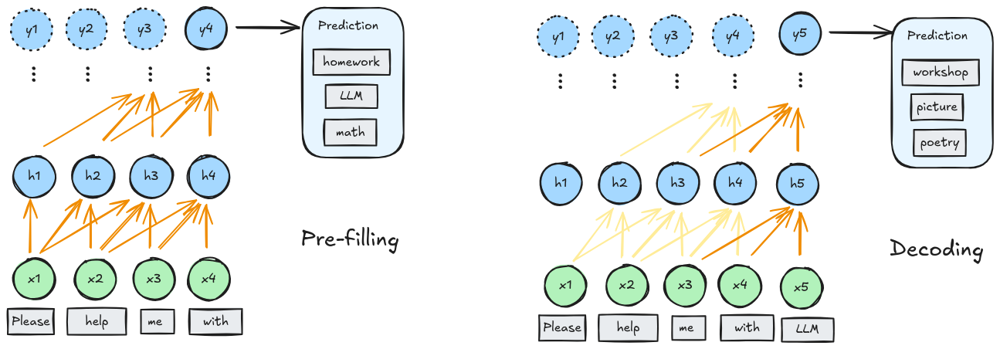
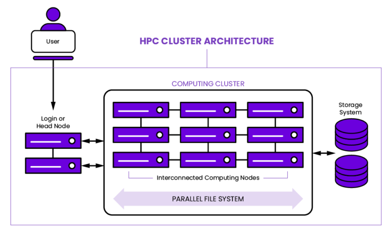
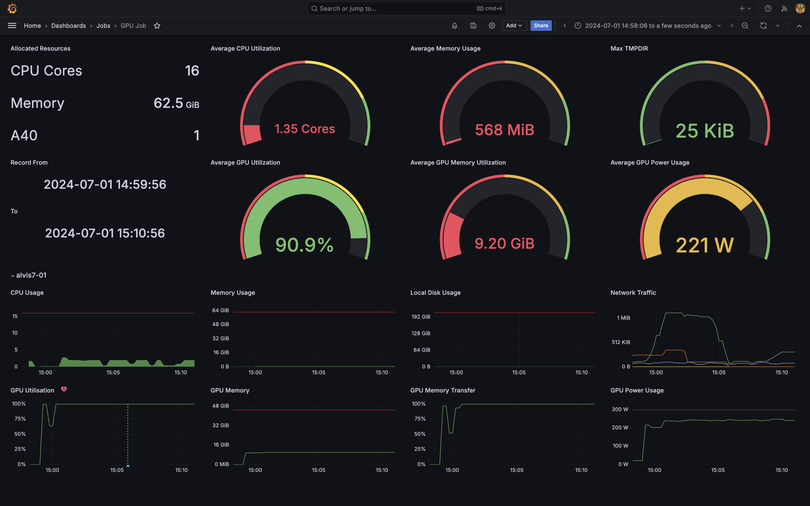

LLM and hardware
Overview
- Computations in LLMs
- LLM on super-comupters
Computations in LLMs
Neural networks

- Learn patterns by adjusting parameters (weights);
- Training = prediction → differentiation → update;
- So far: mini-batch & optimizer & big → good.

- Transformer computes relationships between tokens (attention);
- tokens can be processed in parallel
Training of LLMs
- Just neural networkes that can be parallelized more efficiently;
Fine-tuninig of LLMs

- With specialized data (instruct, chat, etc);
- Less memory usage by "freezing parameters"
Inference of LLMs

- GPT-style inference: pre-filling and decoding;
- Pre-filling: process the input prompt in parallel;
- Decoding: generate new tokens one-by-one, using cached results.
Optimize caches for inference

- KV cache:
- paged attention: indexed blockes of caches;
- flash attention: fuse operations to reduce caches;
more in-depth discussion of the technique where that visualization is from:
paged attention from first principles.
Key takeaway
- LLMs/NNs benefit from massive parallelization;
- Need for different tasks:
- training: memory + compute + data throughput;
- fine-tuninig: similar to training, cheaper;
- pre-filling: compute;
- decoding: memory;
LLM on HPC clusters
LLM on general computers
- Mostly about inference;
- Quantization;
- CPU offloading;
- Memory-mapped file formats;
HPC clusters

- Racked computer nodes;
- Parallel network storage;
- Infiniband/RoCE networking;
Alvis hardware - compute
| Data type |
A100 |
A40 |
V100 |
T4 |
| FP64 |
9.7 | 19.5 |
0.58 |
7.8 |
0.25 |
| FP32 |
19.5 |
37.4 |
15.7 |
8.1 |
| TF32 |
156 |
74.8 |
N/A |
N/A |
| FP16 |
312 |
149.7 |
125 |
65 |
| BF16 |
312 |
149.7 |
N/A |
N/A |
| Int8 |
624 |
299.3 |
64 |
130 |
| Int4 |
1248 |
598.7 |
N/A |
260 |
Alvis hardware - network & storage

- Fast storage: WEKA file system;
- Infiniband: 100Gbit (A100 nodes);
- Ethernet: 25Gbit (most other nodes);
Running LLMs on supercomputers
- Most common bottleneck: memory
- Quantized models to fit larger models;
- Parallelize the model across GPUs or nodes;

- grafana (network utilization, temp disk);
- nvtop, htop (CPU/GPU utilization, power draw);
- nvidia nsight (advanced debugging and tracing);
See details in C3SE documentation.
Summary
Take home messages
- LLMs/neural networks benefit from massive parallelization;
- Same issue of memeory vs. compute-bound;
- Some optimization strategies;
- Be aware of the troubleshooting tools!
Useful links